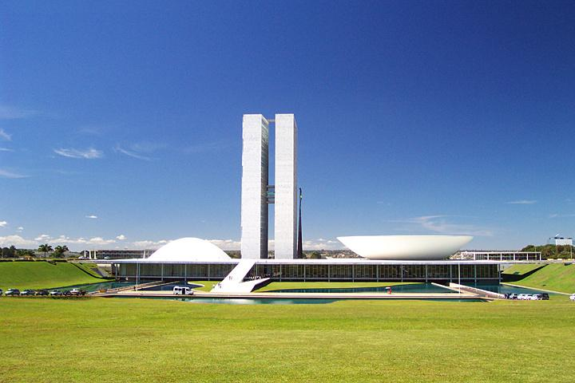

A partir de 1500, com a chegada dos portugueses, o Brasil se tornou colônia de Portugal. A exploração do pau-brasil, a produção de açúcar e a mineração marcaram esse período, que foi caracterizado pela escravidão de africanos e pela catequização dos indígenas.
Pre-Colonial
Colonial Period

A partir de 1500, com a chegada dos portugueses, o Brasil se tornou colônia de Portugal. A exploração do pau-brasil, a produção de açúcar e a mineração marcaram esse período, que foi caracterizado pela escravidão de africanos e pela catequização dos indígenas.
Independence

Em 1822, o Brasil declarou sua independência de Portugal, tornando-se uma monarquia. Dom Pedro I foi o primeiro imperador do país, que passou por diversas transformações políticas e sociais ao longo do século XIX.
Modern Brazil

A partir da Proclamação da República, em 1889, o Brasil passou por diversas fases, como a República Velha, a Era Vargas e a ditadura militar. Atualmente, o país é uma democracia, com uma economia diversificada e uma rica cultura.